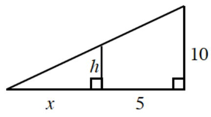

Compare and contrast \(j(x)=\frac{x}{x+2}\) and \(k(x)=\frac{x^2-2x}{x^2-4}\). How are the functions similar? How are they different?
Sketch a graph of the polynomial function \(p(x)=\frac{1}{4}(x-2)^2(x+2)^3\). State the intercepts and end behavior.
A quadratic function has roots of \(x=4-i\) and \(x=4+i\). The graph of the function passes through the point \(\left(4,\ \frac{1}{2}\right)\). Write an equation for this function.
Rewrite \(f(x)=\frac{2x-7}{x-1}\) in the form \(y=\frac{a}{x-h}+k\) and then sketch its graph.
Complete the following problems about sigma notation.
Expand the summation: \(\displaystyle\sum _ { k = 1 } ^ { 4 } ( 3 k ^ { 2 } + 5 )\)
Write the following using sigma notation: \(0.2(4^3+4^{3.2}+4^{3.4}+4^{3.6}+4^{3.8})\)
The sum in part (b) could be a left endpoint approximation of an area under a curve. Which curve? What is the interval?
Solve: \(\sqrt{2m}+\sqrt{m}=\sqrt{18}\). Hint: Let \(u=\sqrt{m}\).
Demarre and Alaysha are trying to decide where the graph of \(f(x)=\frac{1}{x^2}\) is concave up and where it is concave down. They both agree that it is concave up for \(x<0\), but Alaysha says that it cannot be concave up for \(x>0\) since the function is decreasing. Demarre says that it does not matter; all that matters is that it curves up. Who is correct? Explain your answer.
Solve for \(x\): \(\frac{-x}{x+3}+\frac{4}{x+3}=6\)
Use polynomial division to rewrite the equation \(r(x)=\frac{3x^2-5x-20}{x-4}\) in a more-useful form. State the equations of the asymptotes. Then sketch a prediction of what you think the graph looks like. Use a graphing calculator to check your prediction.
Solve for \(x\) by factoring and using the Zero Product Property.
\(x^3-8=0\)
\(16x^5-x=0\)
Determine whether each polynomial could have the given combination of real and nonreal roots.
\(5\) real roots
\(3\) real and \(2\) nonreal roots
\(4\) nonreal roots
\(4\) real and \(2\) nonreal roots
Solve the following system of equations:
\(\begin{aligned}[t] 2x + 3y^2 = 7 \\ 4x - y = 7 \end{aligned}\)
If possible, rewrite each of the following expressions using the properties of exponents.
\(2^b\cdot2^c\)
\(a^{-2}\cdot a^3\)
\(17^b+17^c\)
\(x^{a+b}\div x^a\)
\(15^0\cdot15^b\)
\(29^{(b+c)}\cdot29^{2c}\)
Graph at least two cycles of each of the following trigonometric functions.
\(t(x)=\tan(x-\pi)+5\)
\(v(x)=2\cos(x)-3\)
A car has wheels of radius \(16\) inches. The wheels are spinning at \(800\) rotations per minute. What is the speed of the vehicle in miles per hour?
Review the diagram shown.

Write an equation for \(h\) in terms of \(x\).
If \(h=3.2\), what is the value of \(x\)?